방송
2.2.0부터 있는 기능입니다. 2.1.2 이하에는 없습니다.
Twitch·치지직·SOOP 시청자 이벤트와 디스코드 친구의 반응을 받아 아바타가 반응하게 합니다. 방송 연동은 Pro 기능이며 지금은 베타입니다. 실제 방송에서 문제가 생기면 오류 보고로 알려 주세요.
방송 페이지에는 탭이 두 개 있습니다.
| 탭 | 하는 일 |
|---|---|
| 인터랙션 | 이벤트가 오면 무엇을 할지 정합니다. 간편 설정, 노드 편집기, 쓰러짐·후원 표시·테스트가 있습니다. |
| 연결 | 플랫폼 계정과 디스코드 채널을 연결하고, 웹소켓과 원격 합방 세션을 엽니다. |
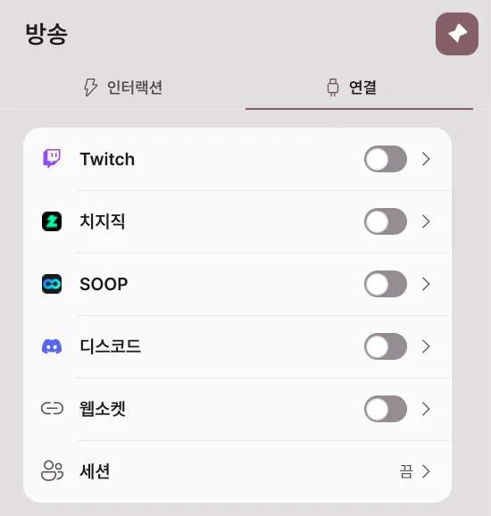
연결
Twitch · 치지직 · SOOP 연결
- 방송 → 연결을 엽니다.
- 연결할 플랫폼의 스위치를 켭니다.
- 브라우저에 열린 플랫폼 로그인 화면에서 내 방송 계정으로 로그인하고 권한을 허용합니다.
- 카드에 연결됨이 표시되면 이벤트를 받을 준비가 끝났습니다.
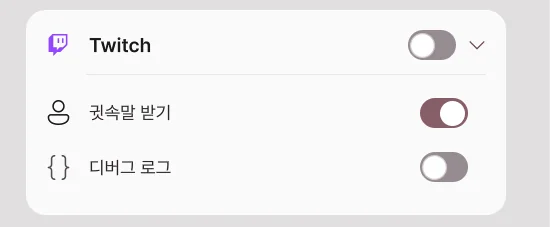
| 플랫폼 | 받을 수 있는 이벤트 |
|---|---|
| Twitch | 채널 포인트 사용, 채팅, 팔로우, 구독(선물·구독 메시지 포함), 비트, 레이드, 하이프 트레인, 귓속말 |
| 치지직 | 채팅, 후원(채팅 후원·영상 후원), 구독 |
| SOOP | 채팅, 별풍선, 애드벌룬, 영상풍선, 스티커, 구독, 선물 |
스위치를 끄면 이벤트를 더 받지 않습니다. 저장된 로그인과 규칙은 지워지지 않습니다. 디버그 로그를 켜면 받은 이벤트가 진단 로그에 자세히 남습니다.
Twitch·치지직·SOOP 로그인은 Avatar Live 서버를 거쳐 연결됩니다. 로그인 정보는 사용자 본인의 PC에만 저장되고, 서버에는 남지 않습니다.
디스코드 연결
방송을 보지 않는 친구도 디스코드 채널에서 버튼이나 /반응 명령으로 아바타를 움직일 수 있습니다. Avatar Live 앱이 켜져 있을 때만 동작합니다.

1. 디스코드 앱 추가하기
Avatar Live 디스코드 앱 추가하기를 열고 추가할 곳을 고릅니다. 앱은 명령(applications.commands) 권한만 요청합니다. 메시지를 읽거나 서버를 관리하지 않습니다.
| 추가할 곳 | 쓰는 경우 |
|---|---|
| 서버에 추가 | 내 디스코드 서버의 채널에서 씁니다. 서버 관리 권한이 필요합니다. 친구들은 아무것도 설치하지 않습니다. |
| 내 계정에 추가 | 서버가 없거나 그룹 DM에서 씁니다. 그룹 DM에서 명령을 직접 치려면 그 친구도 앱을 자기 계정에 추가해야 합니다. 설치하지 않은 친구는 내가 올린 버튼을 누릅니다. |
2. 채널 연결하기
- 앱에서 방송 → 연결 → 디스코드 스위치를 켭니다.
- 연결 코드 만들기를 누릅니다. 8자리 코드가 10분 동안 표시됩니다.
- 연결할 디스코드 채널에서
/연결명령을 고르고 코드 칸에 그 코드를 넣어 보냅니다. - 앱에 "채널을 연결할까요?" 창이 뜨면 서버와 채널 이름을 확인하고 연결을 누릅니다.
- 연결된 채널 목록에 그 채널이 나타납니다.
코드는 한 번만 쓸 수 있습니다. 다른 사람이 이미 연결한 채널은 연결되지 않습니다.
3. 반응 버튼 올리기
- 연결한 채널에서
/패널을 보냅니다. 반응 목록의 반응이 버튼으로 올라갑니다. - 친구가 버튼을 누르거나
/반응으로 반응을 고르면 그 반응을 처리하는 규칙이 실행됩니다. - 디스코드 메시지에 누가 무엇을 했는지 표시됩니다.
반응 목록에서 버튼마다 이름·이모지·값·처리 규칙을 정합니다. 값은 규칙의 최소·최대 개수 조건이 보는 수입니다. 처리 규칙을 누르면 규칙이 차례로 바뀌고, 고른 규칙의 디스코드 반응 트리거가 켜집니다.
디스코드 명령
| 명령 | 누가 | 하는 일 |
|---|---|---|
/연결 코드: |
나 | 이 채널을 내 Avatar Live에 연결합니다. |
/연결해제 |
나·서버 관리자 | 이 채널의 연결을 풉니다. |
/패널 |
나·서버 관리자 | 반응 버튼을 올립니다. 그룹 DM에서도 됩니다. |
/반응 |
친구 | 반응을 하나 고릅니다. 고르지 않으면 첫 반응입니다. |
/포인트 /출석 /선물 /순위 |
친구 | 포인트 게임의 포인트를 확인하고 모으고 나눕니다. |
/룰렛 /슬롯 /하이로우 /블랙잭 /대결 /예측 /복권 /경주 /퀴즈 /보스전 |
친구 | 포인트 게임의 미니게임입니다. |
디스코드 언어가 영어면 명령도 /link, /unlink, /panel, /react처럼 영어 이름으로 보입니다.
포인트 게임의 규칙과 포인트 값은 디스코드 카드의 포인트 게임에서 정합니다. 포인트는 이 PC에 채널별로 저장됩니다.
디스코드와 앱 사이는 개발자 서버가 전달합니다. 친구의 디스코드 이름과 프로필 그림이 내 앱에 전달되어 표시와 스티커에 쓰입니다. 앱은 디스코드에 스스로 글을 올리지 않고 친구의 명령에만 답합니다.
웹소켓
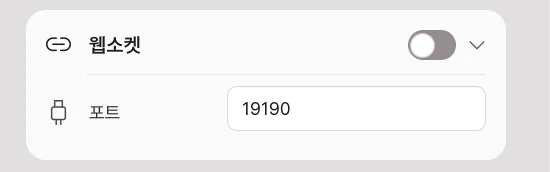
다른 프로그램이 이 PC 안에서 Avatar Live와 이벤트를 주고받게 합니다. 기본은 꺼짐이고 포트는 19190입니다. 같은 PC의 프로그램만 ws://127.0.0.1:포트로 접속할 수 있습니다. 주고받는 내용은 노드 편집기의 웹소켓 노드로 다룹니다.
원격 합방
서로 다른 PC에서 움직이는 아바타를 한 장면에 모읍니다. 참가자 모두 Pro와 원격 세션을 지원하는 같은 버전이 필요합니다.
방송 → 연결 맨 아래의 세션 카드를 엽니다. 방장 한 명이 서버를 열고, 나머지는 방장이 알려 준 주소로 참가합니다.
방장: 방 열기

- 서버 열기를 펼칩니다.
- 내 이름·비밀번호·최대 인원을 정합니다.
- 서버 스위치를 켭니다.
- 참가자에게 접속 주소와 비밀번호를 알려 줍니다.
| 항목 | 무엇을 정하나요? |
|---|---|
| 포트 | 접속에 사용할 번호입니다. 기본은 47700입니다. |
| 최대 인원 | 방장을 포함한 참가 인원입니다. |
| 비밀번호 | 참가할 때 필요한 비밀번호입니다. |
| 서버 스위치 | 방을 열거나 닫습니다. 닫으면 참가자 연결도 끝납니다. |
| 내 주소 | 방장 PC의 내부 주소입니다. 다른 집의 친구에게는 공인 주소와 포트를 알려 주세요. |
친구가 들어오지 못하면 아래 연결이 안 될 때를 확인하세요.
참가자: 들어가기
- 참가를 펼칩니다.
- 주소에 방장이 알려 준
주소:포트를 넣습니다. - 내 이름과 비밀번호를 입력합니다.
- 연결 스위치를 켭니다. 처음 들어갈 때 나오는 입장 안내를 읽고 한 번 동의합니다.
- 참가자 목록에 서로의 이름이 나타나는지 확인합니다.
나가려면 연결 스위치를 끕니다.
아바타 표시와 자리

| 항목 | 켜거나 바꾸면 |
|---|---|
| 데이터 주고받기 | 아바타 데이터를 세션 참가자와 주고받는 스위치 하나입니다. 기본은 꺼짐입니다. |
| 개별 설정 | 펼치면 다른 사람의 아바타 보기, 내 아바타 데이터 보내기를 따로 정합니다. |
| 대체 아바타 | 상대 모델을 사용할 수 없을 때 대신 표시할 모델을 고릅니다. |
| 배치 동기화 | 방장이 정한 자리와 개인 보정을 반영합니다. |
| 자리 잠금 | 방장이 참가자의 위치·회전·크기 변경을 제한합니다. |
| 위치·회전·크기 | 선택한 참가자의 배치를 조절합니다. |
| 다시 찾기 | 이미 보유한 동일한 VRM을 로컬 폴더에서 다시 찾습니다. |
직접 정한 상대 위치는 내 화면에만 적용될 수 있습니다. 여러 사람이 같은 배치를 보려면 배치 동기화를 함께 사용하세요.
아바타를 보내기 전
아바타·의상·소품의 전송 허용 여부는 각 원제작자의 약관을 따릅니다. Pro 구매나 암호화가 공유 허락을 대신하지 않습니다. 재배포가 금지된 VRM은 전송하지 않습니다.
전송할 수 없다면 모델을 보내는 스위치는 끄고 대체 아바타를 사용하세요. 콘텐츠 이용 조건에서 책임과 권한을 확인하세요.
연결이 안 될 때
먼저 방장 서버가 켜져 있는지, 주소·포트·비밀번호가 맞는지, 참가자 버전이 같은지 확인합니다.
친구가 다른 집에서 접속하지 못해요 — 포트포워딩
방장 공유기에서 외부 접속을 방장 PC로 보내도록 설정합니다.
- 방장 PC의 IPv4 주소를 확인합니다.
- 공유기 관리 화면의 포트포워딩·포트 매핑 메뉴를 엽니다.
- 아래 규칙을 만듭니다.
| 설정 | 넣을 값 |
|---|---|
| 내부 IP | 방장 PC의 IPv4 주소 |
| 외부 포트 | 47700 |
| 내부 포트 | 47700 |
| 프로토콜 | TCP와 UDP 모두 |
앱에서 포트를 바꿨다면 양쪽 포트도 같은 번호로 맞춥니다. 참가자는 방장 공유기의 공인 주소와 포트로 접속합니다. PC 내부 주소인 192.168로 시작하는 주소는 다른 집에서 직접 접속할 수 없습니다.
주소와 포트가 맞는데 응답이 없어요 — 방화벽
방장 PC의 Windows 방화벽에서 Avatar Live 통신을 허용했는지 확인합니다. 포트 규칙을 직접 만들면 세션 포트의 TCP·UDP 인바운드를 허용합니다. 방화벽 전체를 끌 필요는 없습니다.
PC 내부 IP가 바뀌었다면 공유기의 포트포워딩 대상도 바꿉니다. 공유기에서 DHCP 주소 예약을 해 두면 같은 PC의 주소가 바뀌는 일을 줄일 수 있습니다.
포트포워딩과 방화벽을 맞춰도 안 돼요 — 공유기·통신사
공유기의 WAN 주소가 사설 주소이거나 통신사의 CGNAT라면 내 공유기 설정만으로 외부 접속이 열리지 않을 수 있습니다. 상위 공유기 설정 또는 통신사의 공인 IP 지원을 확인하세요.
같은 Wi-Fi에서 공인 주소로 시험하면 공유기의 루프백 지원에 따라 실패할 수 있습니다. 다른 네트워크에 있는 참가자와 시험하세요.
세션 데이터 안내
- 한 참가자의 PC가 방장 서버가 됩니다. Avatar Live 운영 서버에 아바타를 보관하는 방식은 아닙니다.
- 전송에 동의한 아바타 데이터는 AES-256-GCM으로 암호화되어 방장·수신 PC에 세션용 임시 캐시로 저장됩니다.
- 세션이 종료되거나 퇴장하면 임시 캐시가 삭제되고 복호화 키도 폐기됩니다.
- 암호화된 캐시만으로는 원본 아바타 파일을 추출하거나 복원할 수 없습니다.
- 실시간 자세·표정·제어 메시지는 아바타 파일 전송과 별개이며 같은 종단 간 암호화가 적용되지 않습니다.
- 파일 전송의 암호화가 아바타·의상·소품의 재배포 권한을 만들지는 않습니다.
인터랙션
간편 설정
간편 설정은 "이벤트가 오면 이렇게 반응한다"를 한 줄로 만드는 목록입니다. 예를 들어 팔로우가 오면 물건을 던지고, 1만 원 이상 후원이 오면 아바타에게 물을 뿌립니다. 방송 연동 기능이라 Pro가 필요하고 지금은 베타입니다.
방송 → 인터랙션의 간편 설정 카드에서 만듭니다.
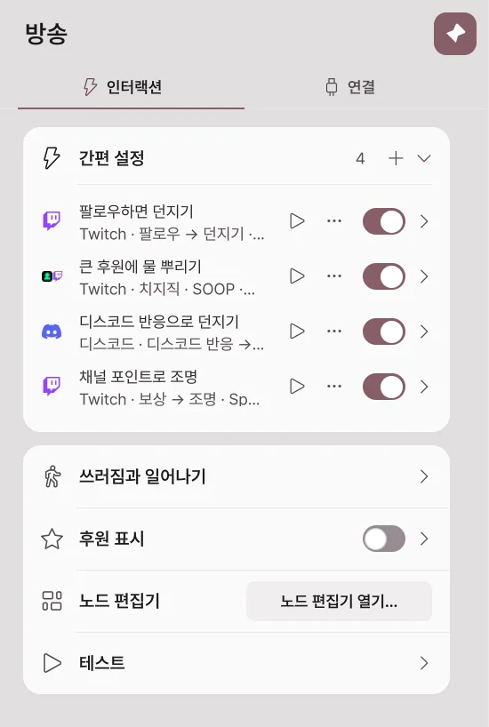
| 행에 보이는 것 | 뜻 |
|---|---|
| 플랫폼 아이콘 | 이 항목이 받는 플랫폼입니다. |
| 이름 | 항목 이름입니다. 처음에는 "규칙 1"처럼 붙습니다. |
| 트리거 → 동작 | 어떤 이벤트에 무엇을 하는지 요약합니다. |
| ▶ | 가짜 이벤트를 한 번 보내 바로 시험합니다. |
| ⋯ | 이름 바꾸기·복제·켜기/끄기·삭제 메뉴입니다. 행을 오른쪽 클릭해도 열립니다. |
| 스위치 | 항목을 켜고 끕니다. |
새 항목 만들기
- 간편 설정 카드의 +를 누릅니다.
- 플랫폼 단계에서 이벤트를 받을 플랫폼을 켭니다. 여러 개를 함께 켤 수 있습니다.
- 다음을 누릅니다.
- 연결 단계에서 그 플랫폼에 로그인되어 있는지 확인합니다. 로그인하지 않았다면 로그인 버튼으로 연결합니다.
- 던지기·스티커·액체 단계에서 각각 어떤 이벤트에 실행할지 고릅니다. 이벤트를 고르지 않은 단계는 만들지 않습니다.
- 만들기를 누르면 목록에 항목이 추가됩니다.
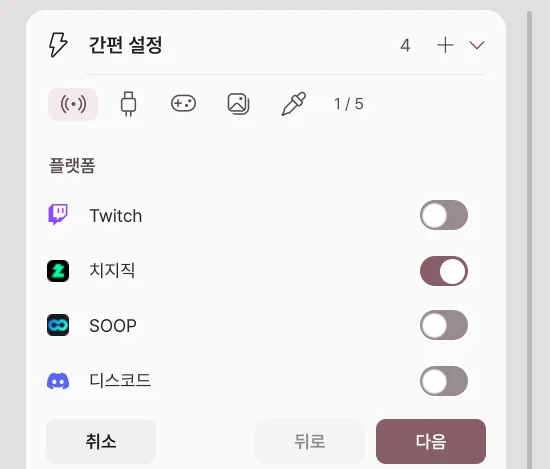
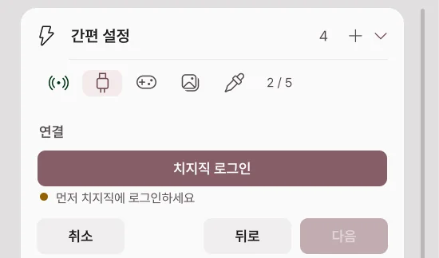
비워 둔 칸은 기본 물건·소리·효과·스티커 폴더로 채워져 바로 동작합니다. 세부 값은 만든 뒤 항목을 펼쳐 바꿉니다.
예시
| 하고 싶은 것 | 트리거 | 동작 |
|---|---|---|
| 팔로우하면 물건 던지기 | Twitch 팔로우 | 던지기 |
| 1만 원 이상 후원에 물 뿌리기 | 치지직 후원, 최소 금액 10000 | 액체 |
| 별풍선 100개 이상이면 물 뿌리기 | SOOP 별풍선, 최소 개수 100 | 액체 |
| 디스코드 친구 반응으로 던지기 | 디스코드 반응 | 던지기 |
| 채널 포인트로 조명 바꾸기 | Twitch 보상, 보상 제목 | 조명 |
예시 항목의 동작 설정은 던지기·액체·쓰러짐에서 자세히 설명합니다.
항목 펼쳐 보기
행 오른쪽 화살표를 누르면 항목이 펼쳐집니다.
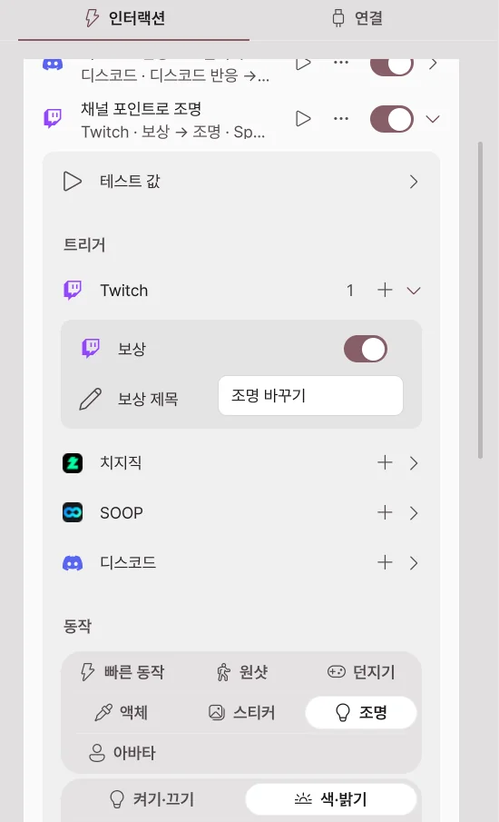
트리거
트리거는 플랫폼별로 묶여 있습니다. 플랫폼 옆 +로 트리거를 더하고, 한 항목에 여러 플랫폼의 트리거를 함께 둘 수 있습니다.
| 트리거 | 조건 |
|---|---|
| 보상 (Twitch) | 보상 제목이 같은 채널 포인트 보상 |
| 채팅 | 메시지에 들어 있어야 할 글자 |
| 비트·후원·별풍선 | 최소 금액·개수, 최대 금액·개수 |
| 구독 | 신규·연속·선물 구독 |
| 디스코드 반응 | 처리할 반응, 최소·최대 개수 |
| 디스코드 미니게임 결과 | 게임, 잭팟일 때만, 최소 받은 포인트 |
테스트 값을 펼치면 ▶ 테스트로 보낼 닉네임·금액·메시지를 정할 수 있습니다.
동작
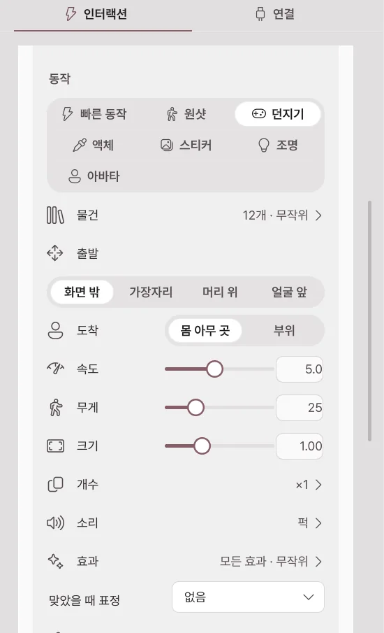
| 동작 | 하는 일 |
|---|---|
| 빠른 동작 | 퀵 액션 하나를 실행합니다. |
| 원샷 | 원샷 애니메이션을 한 번 재생합니다. |
| 던지기 | 소품을 아바타에게 던집니다. 후원 금액에 따라 개수를 늘릴 수 있습니다. |
| 액체 | 물·우유 같은 액체를 뿌립니다. |
| 스티커 | 그림을 아바타에 붙입니다. 시청자 프로필 그림도 쓸 수 있습니다. |
| 조명 | 조명을 잠깐 켜고 끄거나 색·밝기·효과·프리셋을 바꿨다가 정한 시간 뒤 돌아옵니다. |
| 아바타 | 트래킹 끄기, 춤 반복, 포즈 잠깐 걸기를 합니다. |
간편 설정 항목과 노드 편집기가 실행하는 아바타 반응입니다. 어떤 아바타·카메라에서도 쓸 수 있습니다. 방송 연동 기능이라 Pro가 필요하고 지금은 베타입니다.
던지기
소품 라이브러리의 물건을 아바타에게 던집니다. 맞으면 아바타가 서 있는 채로 밀렸다가 돌아옵니다.
| 설정 | 하는 일 |
|---|---|
| 물건 | 던질 물건을 썸네일·분류·검색으로 고릅니다. 여러 개를 고르면 매번 그중 하나를 무작위로 던집니다. |
| 출발 | 화면 밖·가장자리·머리 위·얼굴 앞 중 어디서 날아올지 정합니다. |
| 도착 | 몸 아무 곳 또는 머리·가슴·손 같은 부위를 노립니다. |
| 속도·무게·크기 | 얼마나 빠르고 세게 맞을지, 물건 크기를 정합니다. |
| 개수 | 한 번에 던지는 개수와 간격입니다. 금액에 따라 켜면 후원 금액마다 개수가 늘어납니다. |
| 소리 | 던질 때·맞을 때 소리입니다. 내 소리 파일도 넣을 수 있습니다. |
| 효과 | 맞을 때 충격·반짝임·별·먼지·하트·물방울·색종이 효과를 냅니다. |
| 맞았을 때 표정 | 맞는 동안 지을 표정을 고릅니다. |
| 자세히 | 중력·회전·남는 시간·맞으면 사라지기·맞으면 붙기를 정합니다. |
액체
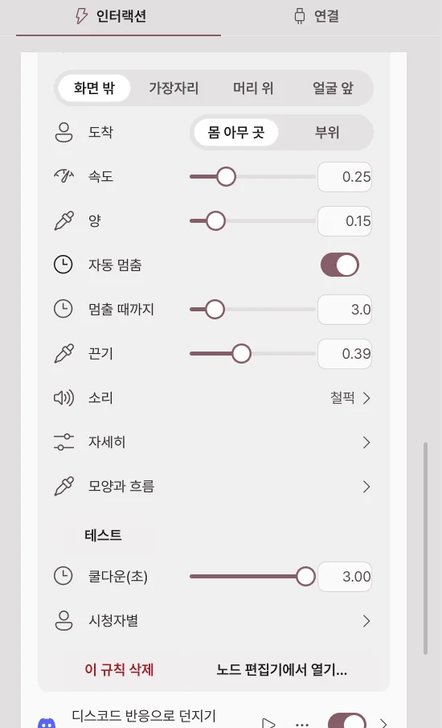
물·주스·우유·꿀·슬라임·먹물·황금 중 액체 종류를 골라 아바타에게 뿌립니다. 액체는 맞은 자리에서 몸을 따라 흘러내리고, 아바타는 잠시 젖어 보이다가 마릅니다.
| 설정 | 하는 일 |
|---|---|
| 출발·도착 | 액체가 나오는 곳과 노리는 곳입니다. 얼굴 앞에서 뿌릴 수도 있습니다. |
| 속도·양 | 얼마나 세게, 얼마나 많이 뿌릴지 정합니다. |
| 자동 멈춤·멈출 때까지 | 정한 시간이 지나면 멈춥니다. 끄면 규칙이나 연결을 끌 때까지 나옵니다. |
| 끈기 | 0이면 물처럼, 1이면 시럽처럼 흐릅니다. |
| 소리 | 기본 「철퍽」은 처음 맞을 때 철퍽 소리와 뿌리고 흐르는 소리를 냅니다. 다른 소리를 고르면 뿌리는 동안 그 소리가 반복되고, 아무것도 고르지 않으면 조용합니다. 기본 「철퍽 · 무작위」가 켜진 채로 다른 소리를 더하면 둘 중 무작위로 나오니, 내 소리만 쓰려면 기본을 꺼 주세요. |
| 모양과 흐름 | 색·발광·반사·표면 장력 같은 모양 값입니다. 유체를 돌릴 수 없는 PC는 간단한 물방울로 그립니다. |
| 젖은 모습 | 액체가 닿은 곳이 젖어 보이는 모습과 마르는 시간입니다. 모든 액체에 똑같이 적용되며 기본은 30초 뒤에 마릅니다. |
스티커
내 그림 파일이나 폴더(그중 무작위), 온라인 그림, 움직이는 GIF·APNG·WebP를 아바타에 붙입니다. 시청자 프로필 그림을 고르면 이벤트를 보낸 시청자의 그림을 받아 붙입니다.
조명
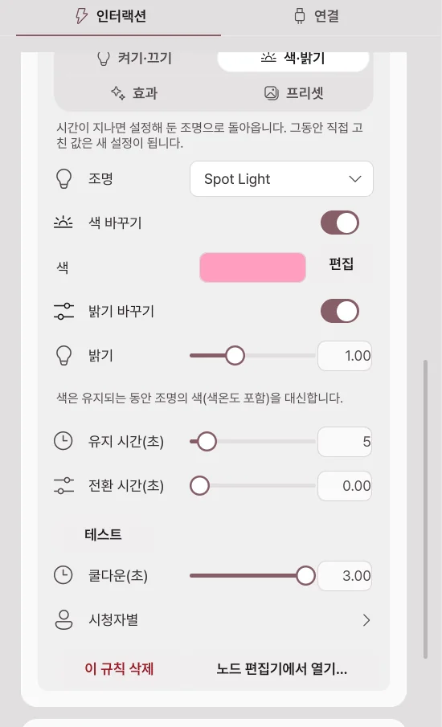
조명 하나를 켜기·끄기·반대로 바꾸거나 색·밝기, 효과, 프리셋을 잠깐 적용합니다. 유지 시간이 지나면 내 조명으로 돌아옵니다. 유지 시간은 최소 1초입니다.
쿨다운과 시청자별 제한
| 항목 | 하는 일 |
|---|---|
| 쿨다운(초) | 한 번 실행한 뒤 다음 실행까지 기다리는 시간입니다. |
| 시청자별 | 같은 시청자의 이벤트에만 따로 쿨다운을 겁니다. |
| 이 규칙 삭제 | 항목을 지웁니다. |
| 노드 편집기에서 열기… | 이 항목이 만든 그래프를 노드 편집기에서 엽니다. |
테스트와 문제 확인
- ▶를 눌러 방송 없이 항목을 시험합니다.
- 실제 이벤트에 반응하지 않으면 플랫폼 연결, 항목 스위치, 쿨다운, 최소 금액을 차례로 확인합니다.
- 그래도 안 되면 방송 연동이 안 될 때를 보고 오류 보고를 보내 주세요.
쓰러짐과 일어나기
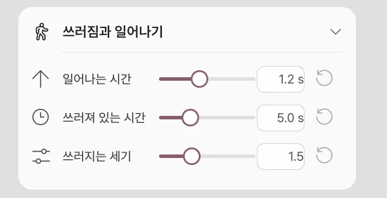
세게 맞거나 쓰러뜨리기 동작이 오면 아바타가 바닥에 쓰러졌다가 천천히 일어납니다. 방송 → 인터랙션 → 쓰러짐과 일어나기에서 정합니다.
| 설정 | 하는 일 |
|---|---|
| 쓰러지는 세기 | 쓰러질 때 뒤로 밀리는 세기입니다. 0이면 서 있던 자리에서 그대로 무너집니다. |
| 쓰러져 있는 시간 | 일어나기 전까지 누워 있는 시간입니다. 노드로 쓰러뜨릴 때는 노드의 대기 시간을 씁니다. |
| 일어나는 시간 | 바닥에서 원래 자세로 일어나는 데 걸리는 시간입니다. 0이면 바로 일어납니다. |
쓰러질 수 없는 아바타는 테스트에서 "이 아바타는 쓰러질 수 없습니다"가 표시됩니다.
후원 표시
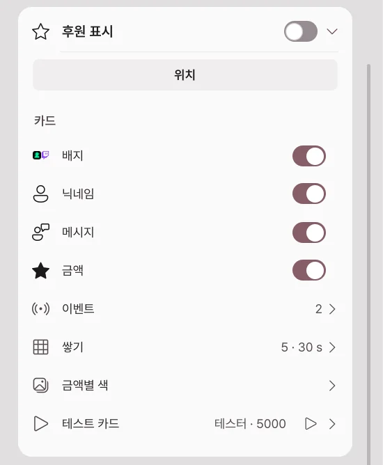
후원자 이름과 메시지를 장면 안의 박스에 카드로 보여 줍니다. 기본은 꺼짐입니다.
| 설정 | 하는 일 |
|---|---|
| 위치 | 박스를 장면의 오브젝트처럼 옮기고 크기를 바꿉니다. |
| 카드 | 배지·닉네임·메시지·금액 중 보여 줄 것을 고릅니다. |
| 이벤트 | 치지직 후원·Twitch 비트·구독·채널 포인트 중 표시할 이벤트입니다. |
| 쌓기 | 카드 수·표시 시간·메시지 길이·최소 금액입니다. |
| 금액별 색 | 금액 구간마다 카드 색을 바꿉니다. |
| 테스트 카드 | 닉네임·메시지·금액을 넣어 카드를 하나 추가해 봅니다. |
노드 편집기
노드를 선으로 이어 "어떤 이벤트가 오면, 어떤 조건일 때, 무엇을 한다"를 직접 만듭니다. 간편 설정으로 부족할 때 씁니다. 편집과 실행은 Pro에서 할 수 있고, Basic에서는 보기·이동·확대·축소만 됩니다. 방송 연동 기능이라 지금은 베타입니다.
간편 설정과 무엇이 다른가요?
| 간편 설정 | 노드 편집기 | |
|---|---|---|
| 만드는 방법 | 목록에서 트리거와 동작을 고릅니다. | 노드를 끌어다 놓고 선으로 잇습니다. |
| 할 수 있는 일 | 던지기·액체·스티커·조명·아바타 동작 같은 정해진 반응 | 계산·변수·분기·반복, 카메라·조명·표정·블렌드셰이프·뼈·키보드·마우스·웹소켓 등 기본 노드 400여 종 |
| 어울리는 경우 | 이벤트 하나에 반응 하나 | 여러 조건을 섞거나 반응을 차례로 이어야 할 때 |
간편 설정 항목도 내부에서는 그래프로 동작합니다. 항목을 펼쳐 노드 편집기에서 열기…를 누르면 그 항목이 만든 그래프를 볼 수 있습니다.
편집기 열기
- 방송 → 인터랙션을 엽니다.
- 노드 편집기 카드의 노드 편집기 열기…를 누릅니다.
- 앱 안에 편집기 창이 열립니다. 제목을 끌어 옮기고, 가장자리를 끌어 크기를 바꿉니다. 오른쪽 위 버튼으로 크게 보거나 닫습니다.
닫아도 그래프는 그대로 남아 동작합니다.
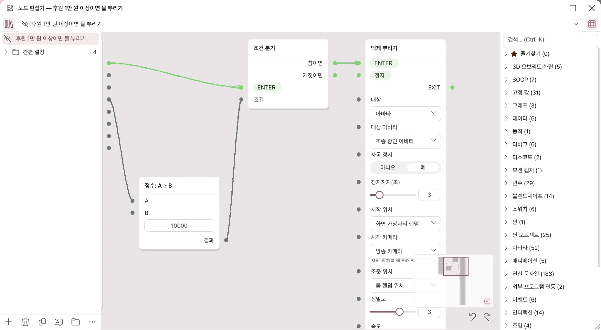
| 자리 | 하는 일 |
|---|---|
| 왼쪽 위 책 아이콘 | 그래프 목록을 보이거나 숨깁니다. |
| 그래프 고르기 | 편집할 그래프를 고릅니다. 눈 아이콘으로 그래프를 켜고 끕니다. |
| 오른쪽 위 격자 아이콘 | 노드 목록을 보이거나 숨깁니다. |
| 그래프 목록 아래 버튼 | 그래프 추가·삭제·복제·이름 바꾸기·그룹 만들기, ⋯ 메뉴(자동 정렬, 가져오기·내보내기)입니다. |
| 노드 목록 | 분류별 노드입니다. Ctrl+K로 검색하고, 별표로 즐겨찾기합니다. |
| 미니맵 | 오른쪽 아래에서 그래프 전체를 보고, 눌러서 그 자리로 갑니다. |
| 되돌리기·다시 실행 | Ctrl+Z, Ctrl+Y |
새 그래프는 꺼진 상태로 만들어집니다. 다 만든 뒤 눈 아이콘으로 켜야 실행됩니다.
노드와 연결
- 노드 목록에서 노드를 캔버스로 끌어다 놓아 추가합니다.
- 노드의 오른쪽 점(출력)을 다른 노드의 왼쪽 점(입력)으로 끌어 잇습니다.
- 흐름 연결(초록 선)은 실행 순서입니다. EXIT에서 ENTER로 이어집니다.
- 값 연결(회색 선)은 금액·이름 같은 값을 넘깁니다.
- 흐름과 값은 서로 이을 수 없습니다. 이을 수 없는 곳에 놓으면 이유가 표시됩니다.
- 노드를 오른쪽 클릭하면 삭제·복제·연결 모두 끊기 메뉴가 나옵니다.
- 연결하지 않은 입력은 노드 안의 칸에 값을 직접 넣습니다.
예시: 1만 원 이상 후원에 물 뿌리기
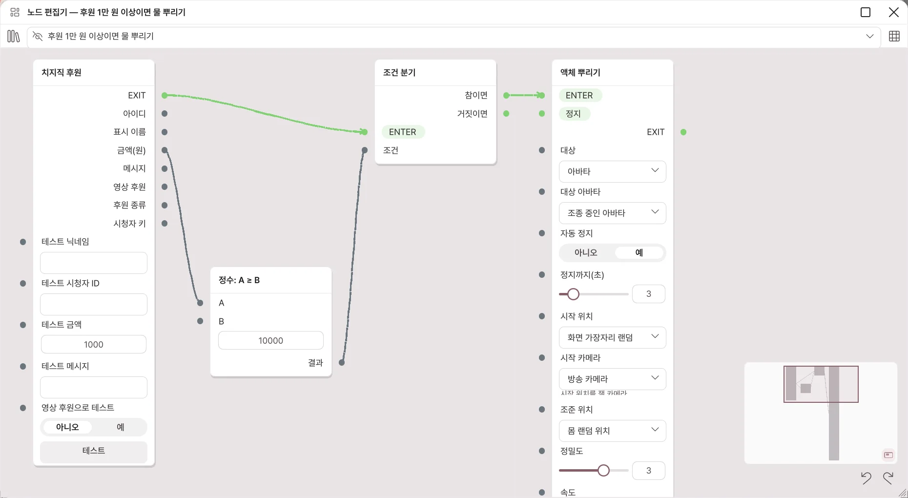
- 그래프 목록의 +로 새 그래프를 만듭니다.
- 노드 목록의 치지직 분류에서 치지직 후원을 끌어다 놓습니다. 후원이 오면 EXIT로 흐름이 나가고 금액(원)을 값으로 내보냅니다.
- 연산·문자열 분류에서 정수: A ≥ B를 놓고, 후원 노드의 금액(원)을 A에 잇습니다. B에 10000을 넣습니다.
- 흐름 제어 분류에서 조건 분기를 놓습니다. 후원 노드의 EXIT를 ENTER에, 비교 노드의 결과를 조건에 잇습니다.
- 인터랙션 분류에서 액체 뿌리기를 놓고, 조건 분기의 참이면을 ENTER에 잇습니다.
- 눈 아이콘으로 그래프를 켭니다.
- 후원 노드의 테스트 금액에 15000을 넣고 테스트를 눌러 물이 뿌려지는지 봅니다. 5000으로 바꿔 테스트하면 뿌려지지 않아야 합니다.
이벤트 노드에는 모두 테스트 칸과 테스트 버튼이 있어 방송 없이 시험할 수 있습니다. 그래프가 꺼져 있으면 테스트도 실행되지 않습니다.
간편 설정 항목을 노드 편집기에서 고치면
- 그 항목은 "노드 편집기에서 수정됨"으로 표시되고, 더 이상 그래프를 새로 만들지 않습니다. 그 뒤로는 그래프가 동작을 정합니다.
- 항목 메뉴의 간편 설정으로 되돌리기를 누르면 항목 설정으로 그래프를 다시 만듭니다. 노드 편집기에서 고친 내용은 사라집니다.
- 자동으로 만든 그래프의 노드가 겹쳐 보이면 ⋯ 메뉴의 자동 정렬을 누르세요.
그래프 나누기
⋯ 메뉴의 클립보드로 내보내기로 그래프를 글로 복사하고, 클립보드에서 가져오기·파일에서 가져오기…로 불러옵니다. 가져온 그래프는 꺼진 상태로 들어옵니다. 다른 사람이 준 그래프는 내용을 확인한 뒤 켜세요.
테스트
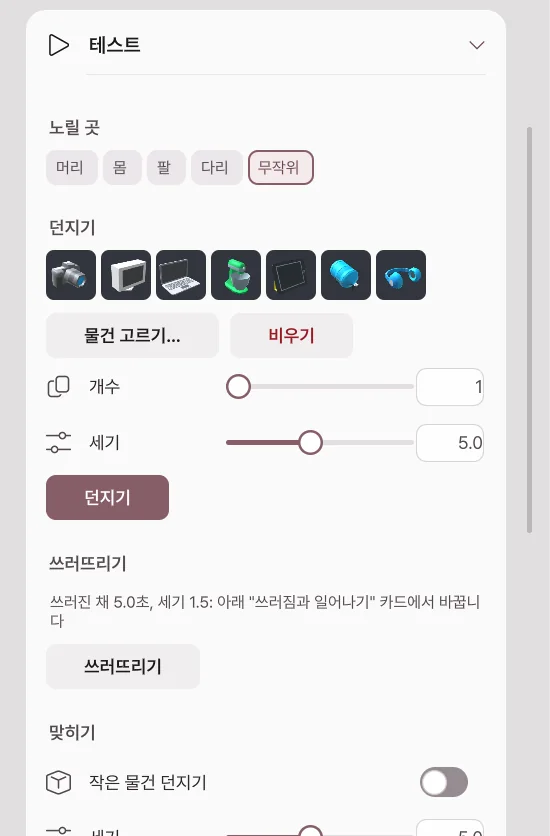
방송 → 인터랙션 맨 아래 테스트 카드에서 규칙이나 이벤트 없이 반응을 바로 시험합니다. 버튼 하나가 한 번 실행입니다.
| 버튼 | 하는 일 |
|---|---|
| 던지기 | 노릴 곳·세기·개수로 물건을 던집니다. 물건을 고르지 않으면 라이브러리에서 무작위로 고릅니다. |
| 쓰러뜨리기 | 아바타를 쓰러뜨립니다. |
| 맞히기 | 고른 부위가 맞았을 때의 반응을 한 번 보여 줍니다. 작은 물건 던지기를 켜면 물건도 날아옵니다. |
| 액체 뿌리기 | 양과 방향(정면 얼굴로·위에서·왼쪽에서·오른쪽에서)을 정해 뿌립니다. |
| 스티커 | 내 그림 중 하나를 무작위로 붙입니다. |
| 되돌리기 | 떠 있는 물건·액체·스티커를 지우고 아바타를 원래 자세로 돌립니다. |
Basic과 Pro
| 기능 | Basic | Pro |
|---|---|---|
| 방송 페이지 보기 | 가능 | 가능 |
| 플랫폼·디스코드·웹소켓 연결 | 잠김 | 가능 |
| 간편 설정·후원 표시·테스트 | 잠김 | 가능 |
| 노드 편집기 | 보기·이동·확대만 | 편집·실행 |
Basic에서도 저장된 로그인·규칙·그래프는 지워지지 않고 잠긴 채 남습니다.